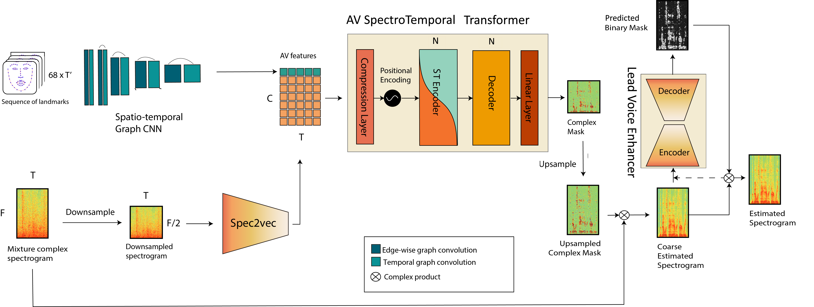

The VoViT model consist of TODO

Latency
| Preprocessing | Inference | Preprocessing + Inference | ||
|---|---|---|---|---|
| Graph Network | Whole model | |||
| VoViT-s1 | 17.95 | 4.50 | 52.21 | 82.18 |
| VoViT | 17.95 | 4.55 | 57.45 | 93.31 |
| VoViT-s1 fp16 | 10.94 | 2.88 | 30.47 | 52.43 |
| VoViT fp16 | 10.94 | 2.86 | 34.18 | 46.14 |
Latency estimation for the different variants of VoViT. Average of 10 runs, batch size 100. Device: Nvidia RTX 3090. GPU utilization >98%, memory on demand. Two forward passed done to warm up. Timing corresponds to ms to process 10s of audio
Note: Pytorch version is no longer supporting complex32 dtype in pytorch 1.11
TODO